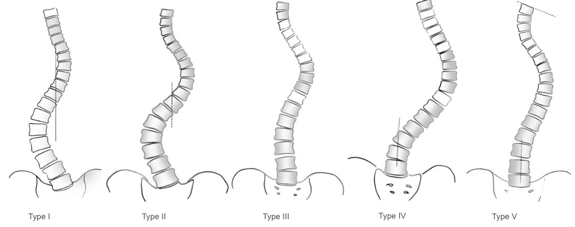
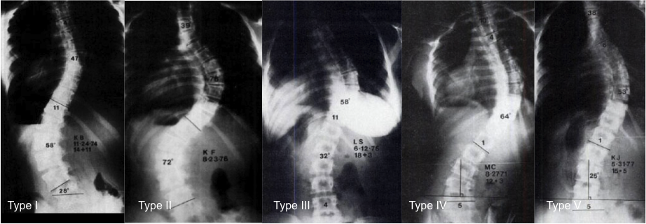

Adapted from: Moore DW. King Classification of AIS. 5 Oct 2016. (Accessed 29 Dec 2025). https://www.orthobullets.com/spine/2075/king-classification-of-ais
1) Description of Measurement
The King–Moe Classification is a historic coronal-plane classification system for adolescent idiopathic scoliosis (AIS) based on the relationship and dominance of thoracic and lumbar curves on standing AP radiographs. It was developed during the Harrington rod era of spinal deformity correction to guide selection of fusion levels by identifying the major curve pattern. The flexibility index (FI) was introduced with this system. This index assesses the percent of flexibility of the lumbar and thoracic curves on maximum lateral bending. The flexibility index is equal to the difference of the percent correction of the lumbar curve and percent correction of the thoracic curve.
The system describes five coronal curve types (Types I–V), focusing exclusively on coronal alignment (based on the central sacral vertical line) without considering sagittal profile or three-dimensional deformity.
2) Instructions to Measure
3) Normal vs. Pathologic Ranges
4) Important References
King HA, Moe JH, Bradford DS, Winter RB. The selection of fusion levels in thoracic idiopathic scoliosis. J Bone Joint Surg Am. 1983 Dec;65(9):1302-13.
Smith JS, Shaffrey CI, Kuntz C 4th, Mummaneni PV. Classification systems for adolescent and adult scoliosis. Neurosurgery. 2008 Sep;63(3 Suppl):16-24. doi: 10.1227/01.NEU.0000320447.61835.EA.
Ritzman TF, Floccari LV. The Sagittal Plane in Spinal Fusion for Adolescent Idiopathic Scoliosis. J Am Acad Orthop Surg. 2022 Jul 15;30(14):e957-e967. doi: 10.5435/JAAOS-D-21-01060.
5) Other info....
Historical Role
Key Limitations
Modern Relevance